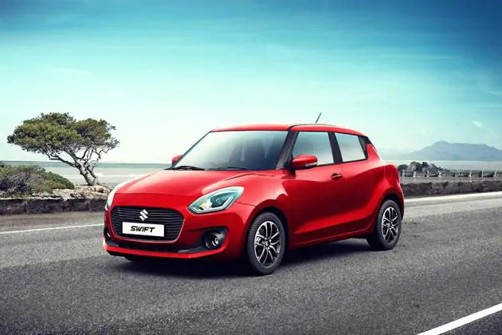

| Maruti Car Models | |||||||||
|  | Maruti Swift The Maruti Swift has 1 Petrol Engine on offer. The Petrol engine is 1197 cc. It is available with the Manual and Automatic transmission. Depending upon the variant and fuel type the Swift has a mileage of 21.21 kmpl. The Swift is a 5 seater Hatchback and has a length of 3840mm, width of 1735mm and a wheelbase of 2450mm. price :-Rs. 5.19 - 8.02 Lakh | ||||||||
.webp) |
Maruti Baleno Maruti Baleno is a 5 seater Hatchback available in a price range of Rs. 5.63 - 8.96 Lakh . It is available in 9 variants, a 1197 cc, BS6 and 2 transmission options: Manual & Automatic. Other key specifications of the Baleno include a kerb weight of 910-935, ground clearance of 170mm and boot space of 339 Liters. The Baleno is available in 5 colours. Over 5942 User reviews basis Mileage, Performance, Price and overall experience of users for Maruti Baleno. | ||||||||
.webp) |
Maruti Vitara Brezza Maruti Vitara Brezza is a 5 seater SUV available in a price range of Rs. 7.34 - 11.4 Lakh*. It is available in 9 variants, a 1462 cc, BS6 and 2 transmission options: Manual & Automatic. Other key specifications of the Vitara Brezza include a kerb weight of 1135-1150, ground clearance of and boot space of 328 Liters. The Vitara Brezza is available in 8 colours. Over 286 User reviews basis Mileage, Performance, Price and overall experience of users for Maruti Vitara Brezza | ||||||||
.webp) |
Maruti Jimny Maruti has finally brought the latest Jimny to India at the Auto Expo 2020, details here. It could be launched here as a 5-seater by 2021. Maruti Jimny Launch and Price: There’s a possibility that we might get a bigger five-door version of the Jimny in the 2020-21 financial year. More on this here. Expect the Jimny to cost around Rs 10 lakh with the SUV being retailed through the NEXA chain of premium car dealerships. Maruti Jimny Engine and Transmission: Globally, the Jimny is available with the same 1.5-litre petrol engine that powers the Ciaz, Ertiga and the facelifted Vitara Brezza too. It has an output of 105PS and 138Nm. While a 5-speed manual is standard, the Jimny also comes with an option of a 4-speed AT. A four-wheel-drive system with a low range transfer gear will likely be offered as standard across all models. | ||||||||